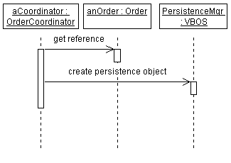
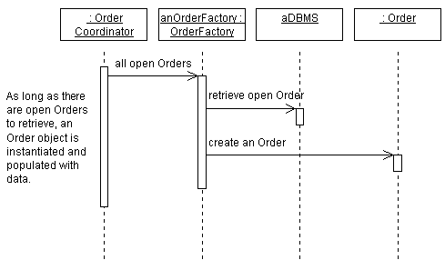
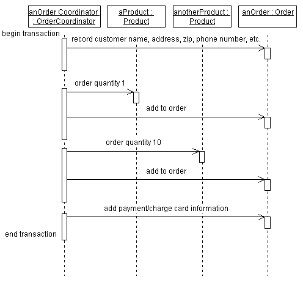
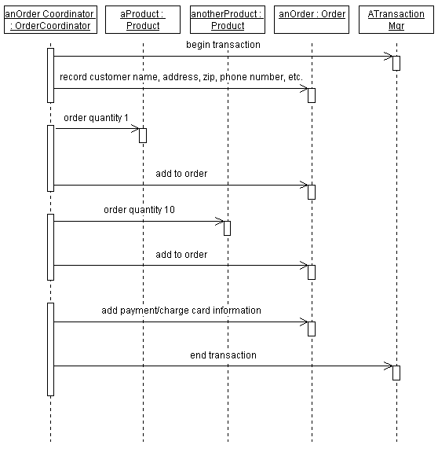
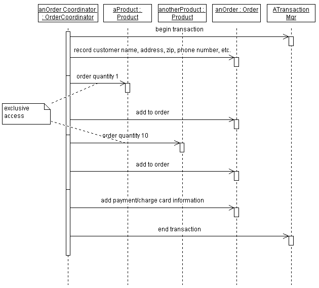

|
The whole goal of the object-oriented paradigm is to encapsulate implementation details. Therefore, with respect
to persistence, we would like to have a persistent object look just like a transient object. We should not have
to be aware that the object is persistent, or treat it any differently than we would any other object. At least that's
the goal.
In practice, there might be times when the application needs to control various aspects of persistence:
-
when persistent objects are read and written
-
when persistent objects are deleted
-
how transactions are managed
-
how locking and concurrency control is achieved
There are two cases to be concerned with here: the initial time the object is written to the persistent object store,
and subsequent times when the application wants to update the persistent object store with a change to the object.
In either case, the specific mechanism depends on the operations supported by the persistence framework. Generally, the
mechanism used is to send a message to the persistence framework to create the persistent object. Once an object is
persistent, the persistence framework is smart enough to detect subsequent changes to the persistent object and write
them to the persistent object store when necessary (usually when a transaction is committed).
An example of a persistent object being created is shown below:

The object PersistenceMgr is an instance of VBOS, a persistence framework. The OrderCoordinator creates a persistent
Order by sending it as the argument to a 'createPersistentObject' message to the PersistenceMgr.
It is generally not necessary to explicitly model this unless it is important to know that the object is being
explicitly stored at a specific point in some sequence of events. If subsequent operations need to query the object,
the object must exist in the database, and therefore it is important to know that the object will exist there.
Retrieval of objects from the persistent object store is necessary before the application can send messages to that
object. Recall that work in an object-oriented system is performed by sending messages to objects. But if the object
that you want to send a message to is in the database but not yet in memory, you have a problem: you cannot send a
message to something which does not yet exist!
In short, you need to send a message to an object that knows how to query the database, retrieve the correct object,
and instantiate it. Then, and only then, can you send the original message you originally intended. The object that
instantiates a persistent object is sometimes called a factory object. A factory object is responsible
for creating instances of objects, including persistent objects. Given a query, the factory could be designed to
return a set of one or more objects which match the query.
Generally objects are richly connected to one another through their associations, so it is usually only necessary to
retrieve the root object in an object graph; the rest are essentially transparently 'pulled' out of the database
by their associations with the root object. (A good persistence mechanism is smart about this: it only retrieves
objects when they are needed; otherwise, we might end up trying to instantiate a large number of objects needlessly.
Retrieving objects before they are needed is one of the main performance problems caused by simplistic persistence
mechanisms.)
The following example shows how object retrieval from the persistent object store can be modeled. In an actual sequence
diagram, the DBMS would not be shown, as this should be encapsulated in the factory object.

The problem with persistent objects is, well, they persist! Unlike transient objects which simply disappear when the
process that created them dies, persistent objects exist until they are explicitly deleted. So it's important to delete
the object when it's no longer being used.
Trouble is, this is hard to determine. Just because one application is done with an object does not mean that all
applications, present and future, are done. And because objects can and do have associations that even they don't know
about, it is not always easy to figure out if it is okay to delete an object.
In design, this can be represented semantically using state charts: when the object reaches the end
state, it can be said to be released. Developers responsible for implementing persistent classes can then use
the state chart information to invoke the appropriate persistence mechanism behavior to release the object. The
responsibility of the Designer of the use-case realization is to invoke the appropriate operations to cause the object
to reach its end state when it is appropriate for the object to be deleted.
If an object is richly connected to other objects, it might be difficult to determine whether the object can be
deleted. Since a factory object knows about the structure of the object as well as the objects to which it is
connected, it is often useful to charge the factory object for a class with the responsibility of determining whether a
particular instance can be deleted. The persistence framework can also provide support for this capability.
Transactions define a set of operation invocations which are atomic; they are either all performed, or none of
them are performed. In the context of persistence, a transaction defines a set of changes to a set of objects which are
either all performed or none are performed. Transactions provide consistency, ensuring that sets of objects move from
one consistent state to another.
There are several options for showing transactions in Use Case Realizations:
-
Textually. Using scripts in the margin of the sequence diagram, transaction boundaries can be documented as
shown below. This method is simple, and allows any number of mechanisms to be used to implement the transaction.

Representing transaction boundaries using textual annotations.
-
Using Explicit Messages. If the transaction management mechanism being used uses explicit messages to begin
and end transactions, these messages can be shown explicitly in the sequence diagram, as shown below:

A sequence diagram showing explicit messages to start and stop transactions.
Handling Error Conditions
If all operations specified in a transaction cannot be performed (usually because an error occurred), the transaction
is aborted, and all changes made during the transaction are reversed. Anticipated error conditions often
represent exceptional flows of events in use cases. In other cases, error conditions occur because of some failure in
the system. Error conditions should be documented in interactions was well. Simple errors and exceptions can be shown
in the interaction where they occur; complex errors and exception may require their own interactions.
Failure modes of specific objects can be shown on state charts. Conditional flow of control handling of these failure
modes can be shown in the interaction in which the error or exception occurs.
Concurrency describes the control of access to critical system resources in the course of a transaction. In order to
keep the system in a consistent state, a transaction may require that it have exclusive access to certain key resources
in the system. The exclusivity may include the ability to read a set of objects, write a set of objects, or both read
and write a set of objects.
Let's look at a simple example of why we might need to restrict access to a set of objects. Let's say we a running a
simple order entry system. People call-in to place orders, and in turn we process the orders and ship the orders. We
can view the order as a kind of transaction.
To illustrate the need for concurrency control, let's say I call in to order a new pair of hiking boots. When the order
is entered into the system, it checks to see if the hiking boots I want, in the correct size, are in inventory. If they
are, we want to reserve that pair, so that no one else can purchase them before the order can be shipped out.
Once the order is shipped, the boots are removed from inventory.
During the period between when the order is placed and when it ships, the boots are in a special state—they are
in inventory, but they are "committed" to my order. If my order gets canceled for some reason (I change my mind, or my
credit card has expired), the boots get returned to inventory. Once the order is shipped, we will assume that our
little company does not want to keep a record that it once had the boots.
The goal of concurrency, like transactions, is to ensure that the system moves from one consistent state to another. In
addition, concurrency strives to ensure that a transaction has all the resources it needs to complete its work.
Concurrency control may be implemented in a number of different ways, including resource locking, semaphores, shared
memory latches, and private workspaces.
In an object-oriented system, it is difficult to tell from just the message patterns whether a particular message might
cause a state change on an object. Also, different implementations may obviate the need to restrict access to certain
types of resources; for example, some implementations provide each transaction with its own view of the state of the
system at the beginning of the transaction. In this case, other processes may change the state of and object without
affecting the 'view' of any other executing transactions.
To avoid constraining the implementation, in design we simply want to indicate the resources to which the transaction
must have exclusive access. Using our earlier example, we want to indicate that we need exclusive access to the boots
that were ordered. A simple alternative is to annotate the description of the message being sent, indicating that the
application needs exclusive access to the object. The Implementer then can use this information to determine how best
to implement the concurrency requirement. An example sequence diagram showing annotation of which messages require
exclusive access is shown below. The assumption is that all locks are released when the transaction is completed.

An example showing annotated access control in a sequence diagram.
The reason for not restricting access to all objects needed in a transaction is that often only a few objects should
have access restrictions; restricting access to all objects participating in a transaction wastes valuable resources
and could create, rather than prevent, performance bottlenecks.
|